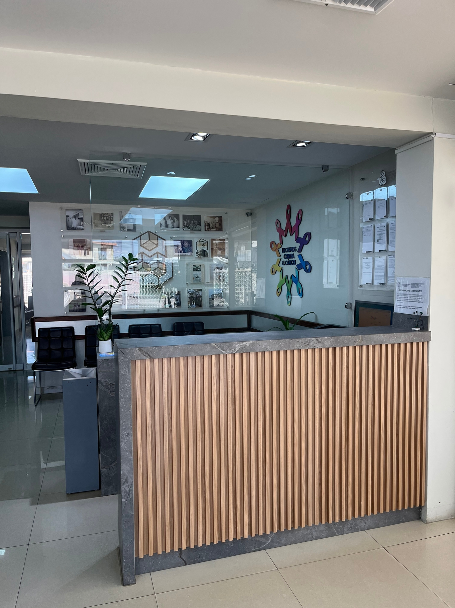
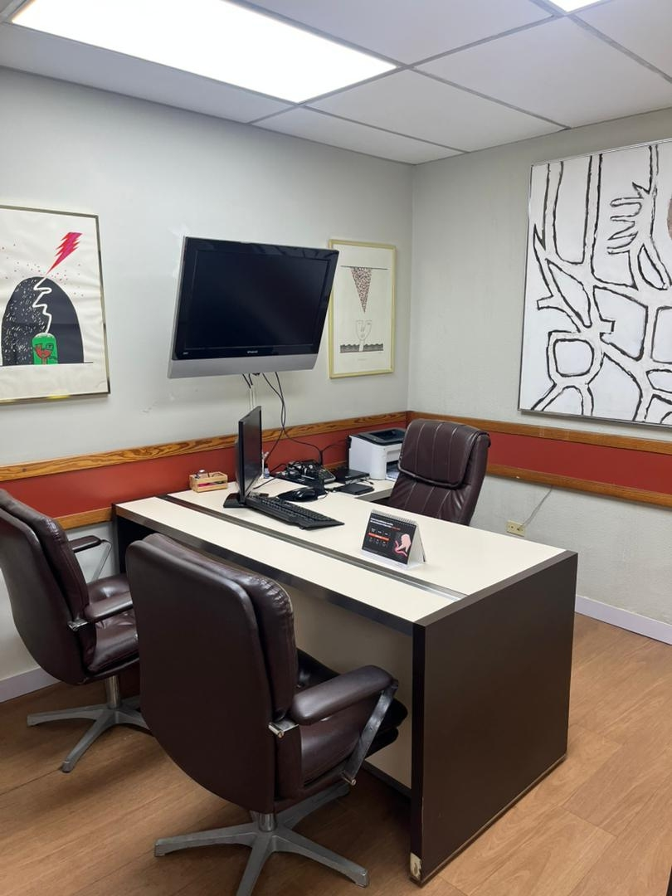
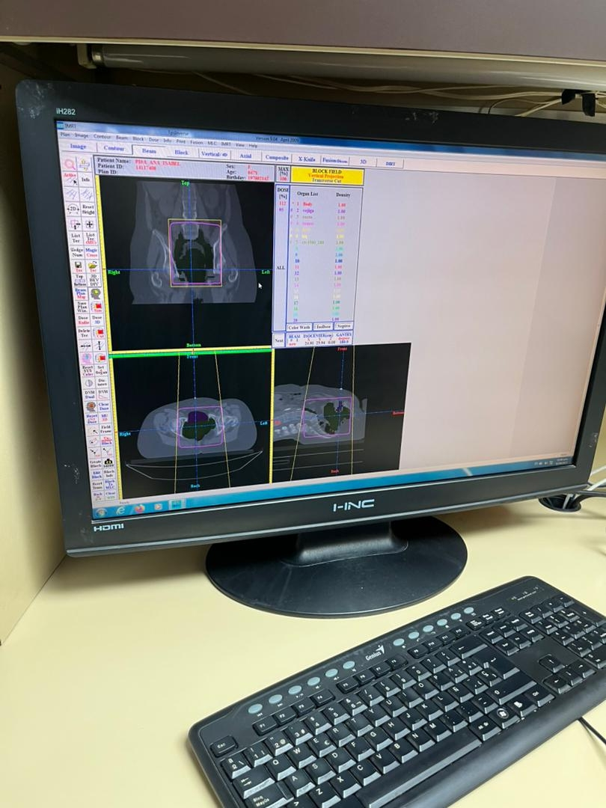
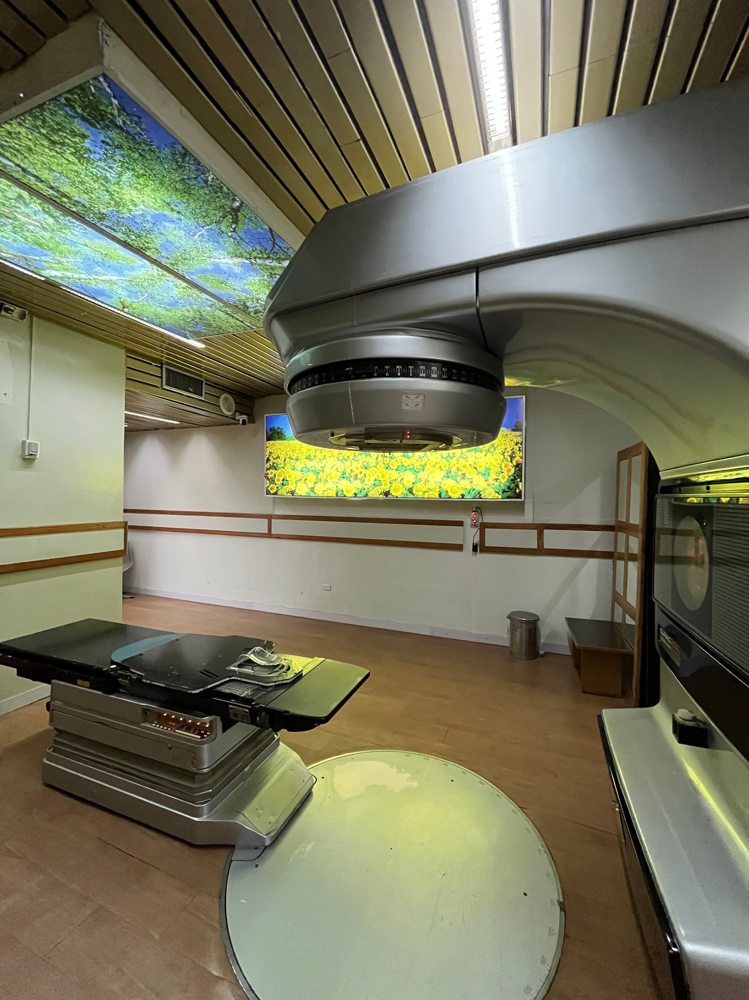

Excelencia en el Cuidado Oncológico
Fundado en 1980, comprometidos con la salud y el bienestar mediante tecnología de vanguardia y un equipo médico altamente especializado.
Solicitar ConsultaQuiénes Somos
El Instituto Oncológico de Occidente (IOO) fue fundado por el Dr. José Luis Padilla Viloria en el año 1980. Nuestra institución se dedica única y exclusivamente al tratamiento de pacientes en el área oncológica.
Misión
Liderar la atención, investigación, prevención y formación académica en el área oncológica, mediante protocolos integrales de radioterapia y quimioterapia. Nos enfocamos en elevar la calidad de vida de nuestros pacientes a través de un equipo multidisciplinario que combina excelencia científica con una profunda calidad humana.
Visión
Consolidarnos como el principal centro de referencia oncológica en el occidente del país, distinguiéndonos por una atención médica, social y familiar de excelencia que garantice a cada paciente el mejor tratamiento posible, proyectándonos como un centro de capacitación vanguardista a nivel nacional.
Servicios Ofrecidos
Brindamos diagnóstico, tratamiento integral y monitoreo con un enfoque humano y profesional.
Oncología Clínica
Diagnóstico, evaluación y monitoreo clínico especializado.
Radioterapia (Consulta y Planificación)
Planificación avanzada de tratamiento de radioterapia.
Radioterapia (Tratamiento)
Utiliza radiación de alta energía para destruir células cancerosas y reducir tumores benignos y malignos.
Sala de Quimioterapia
Administración segura de fármacos específicos para destruir células cancerosas.
Psicología Oncológica
Brindar apoyo emocional, psicológico y social a pacientes, familiares y cuidadores.
Nutrición Clínica
Evaluar, diagnosticar e indicar un plan de alimentación básico según las necesidades del paciente.
Directorio Médico
Profesionales comprometidos con la salud y el bienestar integral de cada paciente.
Dra. Lina Aguilera
Médico Radioterapeuta
Dr. Williams Salas
Oncólogo Clínico
Dra. Olimaira Paz
Médico General
Psic. Manuel Fernández
Psicólogo
Haz clic para ver perfil completo
Nut. Columba Parra
Nutricionista
Haz clic para ver perfil completo
Psic. & Nut. Andrea Osorio
Psicólogo, Nutricionista y Coordinadora de Atención al Paciente
Reseña Histórica
Fundamentos y Pionerismo (1980 - 2000)
Fundado por el Dr. José Luis Padilla Viloria (pionero de la radioterapia en Venezuela), el instituto nació con la misión exclusiva de brindar atención especializada. Marcó un hito regional al introducir protocolos avanzados de radioterapia e instalar el primer acelerador lineal de la zona (Varian 6X), complementado con una unidad de Cobalto 60.
Evolución Tecnológica y Compromiso Social (2002 - 2015)
En 2002 se modernizó la infraestructura reemplazando la unidad de cobalto por un segundo acelerador lineal (Varian 600C). Para 2009, se incorporó tecnología de punta: un acelerador Varian 2100CD con MLC, tomógrafo especializado y sistemas de planificación 3D (IMRT Inverse), manteniendo un firme compromiso social con la población vulnerable.
Visión de Futuro y Proyección Regional
Proyectado como el motor de la modernización oncológica en Maracaibo, el instituto apunta a la renovación tecnológica para técnicas como VMAT, SBRT y SRT, consolidándose además como un eje de formación académica, pasantías y alianzas estratégicas de investigación en el país.
Nuestras Instalaciones
El Instituto cuenta con espacios diseñados para el confort y la tranquilidad del paciente.

Recepción y Salas de Espera
Espacios acondicionados para ofrecer comodidad, tranquilidad y un ambiente cálido a nuestros pacientes y familiares.

Consultorios Médicos Especializados
Áreas destinadas a la evaluación clínica, diagnóstico y seguimiento personalizado por parte de nuestros especialistas.

Sala de Quimioterapia
Área de tratamiento dedicada a la administración segura y controlada de fármacos oncológicos.

Área de Física Médica
Espacio técnico especializado para la dosimetría, cálculo de tratamientos y garantía de calidad radiológica.

Máquina de Radioterapia
Espacios acondicionados para ofrecer comodidad, tranquilidad y un ambiente cálido a nuestros pacientes y familiares.
Información de Contacto
Ubicación y Canales Directos
Dirección: Urb. La Trinidad, calle 59 con Av. 15D, Cód. postal 4006, Maracaibo, Venezuela
Teléfonos de atención: (+58) 424-6144271 / 424-6147405
Correo electrónico: salud.ioove@gmail.com
Síguenos en nuestras redes sociales: